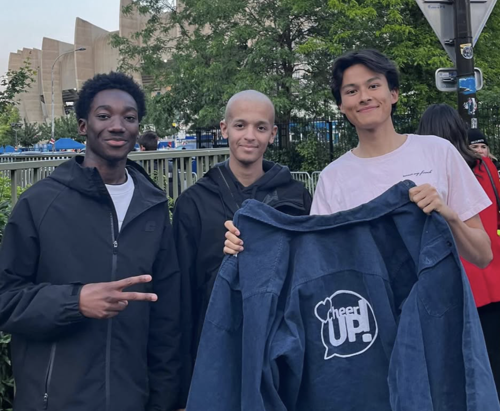
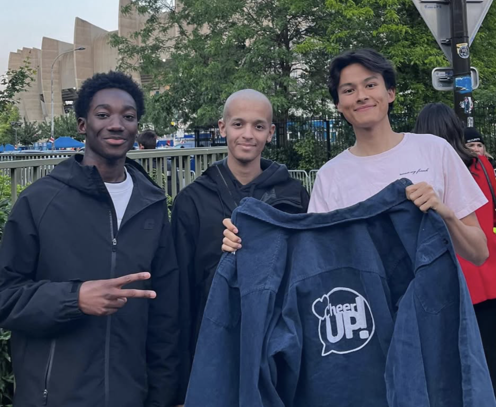

Evènements spéciaux
Découvrez nos activités collectives, pensées pour créer des souvenirs et renforcer les liens entre les jeunes accompagnés.
Ligue des Champions - PSG vs Arsenal
Le 7 mai au Parc des Princes, le PSG a sign√© une victoire historique 2-1 face √† Arsenal en demi-finale retour de LDC, exactement comme l‚Äôavaient pr√©dit Karim, Salim, Loan, Angelino et Samy. Dans une ambiance survolt√©e entre tribunes et bars, supporters et amis ont vibr√© √† l‚Äôunisson. Une soir√©e m√©morable qui donne d√©j√† envie d‚Äôy croire encore pour la suite ‚ù§Ô∏èüíô‚öΩÔ∏è

 

DisneyLand
‚ú® Une journ√©e magique a eu lieu quand les jeunes ont eu la chance d‚Äôaller √† Disneyland Paris üé¢üè∞ ! Entre attractions √† sensations, parades f√©√©riques et rencontres avec leurs personnages pr√©f√©r√©s, chacun est retomb√© en enfance le temps d‚Äôune aventure inoubliable. Sourires, rires et √©toiles dans les yeux ont rythm√© cette escapade pleine d‚Äô√©motions ‚ú®üç≠.

Finale de Ligue des champions - PSG vs Inter Milan
‚öΩÔ∏è Le r√™ve a continu√© au Parc des Princes pour vivre la grande finale de Ligue des Champions 2024 sur √©cran g√©ant üèÜ. Dans une ambiance √©lectrique aux c√¥t√©s des supporters parisiens, les jeunes ont vibr√© √† chaque action, comme s‚Äôils √©taient dans le stade m√™me du match. Cris, chants et frissons collectifs ont transform√© cette soir√©e en un souvenir grav√© √† jamais üî¥üîµüî•.